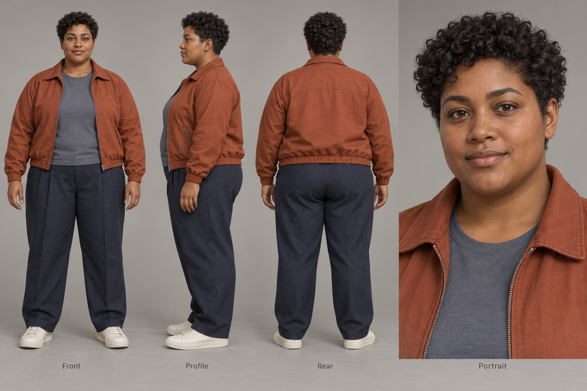
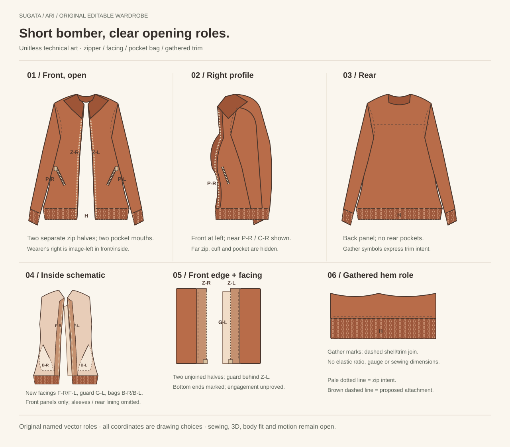
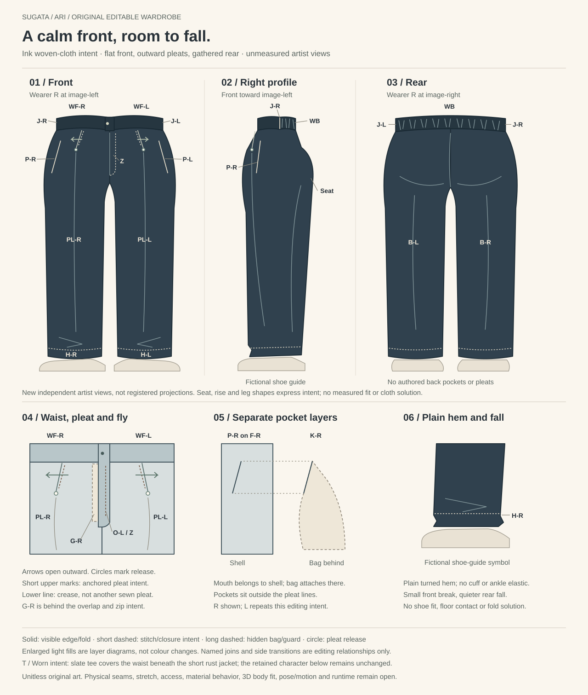

SUGATA / ARI / ARTIST FILES
One character direction.
Four editable drawings.
The retained Ari concept, short bomber, lining and facings, generous trousers and quiet ivory shoe, collected for further authorship.
Original artwork, unchanged. These are unitless artist studies with independent views. Sewing, 3D surfaces, body fit, motion and complete-character quality remain open.
THE CHARACTER DIRECTION
Ari, in rust and ink
Front, profile, rear and portrait discussion views. The broader torso, short jacket and generous lower silhouette are deliberate artist choices, without registered geometry.
The jacket reads matte and textured; pleats and waist details are indistinct here. A tiny pale portrait-ear stud remains in the original. This illustration is not an editable or supported runtime character.


01 / EXTERIOR AND OPENING ROLES
The short bomber
Front, right profile and rear, with the original front-panel inside schematic and enlarged zipper, facing and gathered-hem intent. The separate full interior study follows below.



SVG is authoritative. Refresh the JSON associations after edits. Bag envelopes, joins and trim marks express intent; sewing, zipper engagement, pocket capacity and fit are unproved.
02 / LINING AND FACINGS
Inside the jacket
Front lining panels, facings and zipper halves; back and both sleeve linings; neck, fold and hidden outer-pocket bag relationships. Pocket access remains on the exterior, with no new inside pocket.


Independent inside views put wearer R at image-left. Labels identify intended relationships, not matched cut edges. Physical interior continuity, ease, sewing and mechanisms remain open.
03 / WAIST, PLEATS AND FALL
Generous ink trousers
A smooth front band, one outward-opening pleat per leg, fly and guard, angled pockets and gathering at the back waist. Front, right profile and rear accompany enlarged layer and hem details.



The right pocket bag is drawn; the left remains written counterpart intent. Detail fills explain layers. Rise, ease, seams, material behavior, shoe contact and body fit are unmeasured.
04 / ONE LEFT SHOE
The quiet ivory low-top
Six independent views and an enlarged entry and central-lace detail. The full top owns five eyelet pairs; the enlargement shows three central pairs. The right shoe is written counterpart intent only.


A 2D artist target, without registered geometry or a measured last. Lining continuity, manufacturing, anatomical pairing, materials, grip, foot fit and motion remain open. No rejected 3D shoe is included.